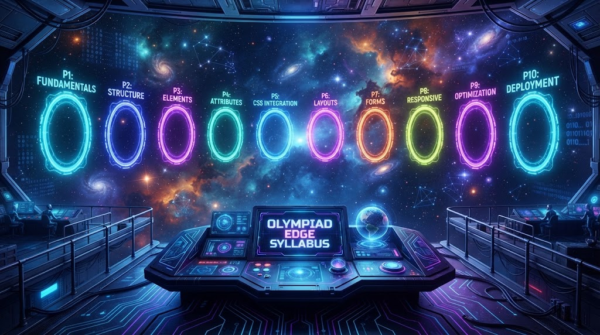
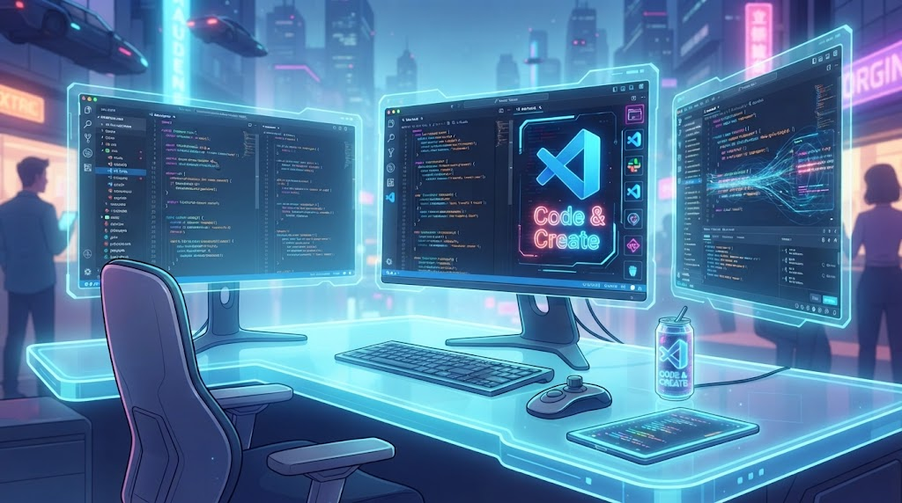
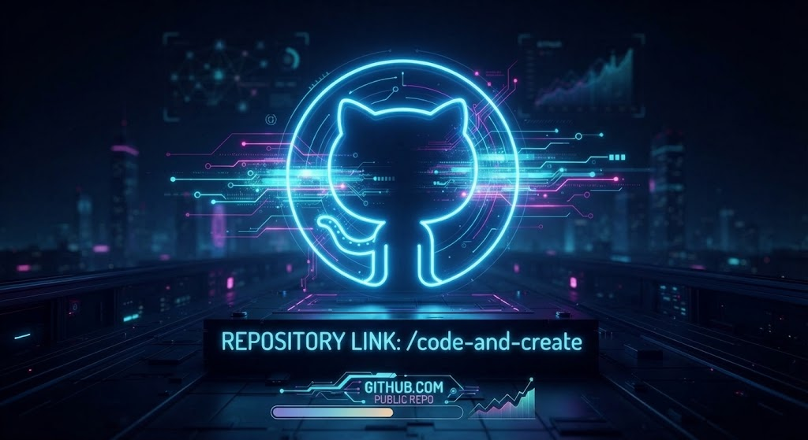
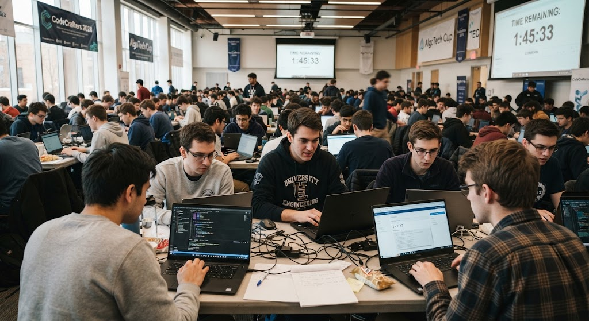
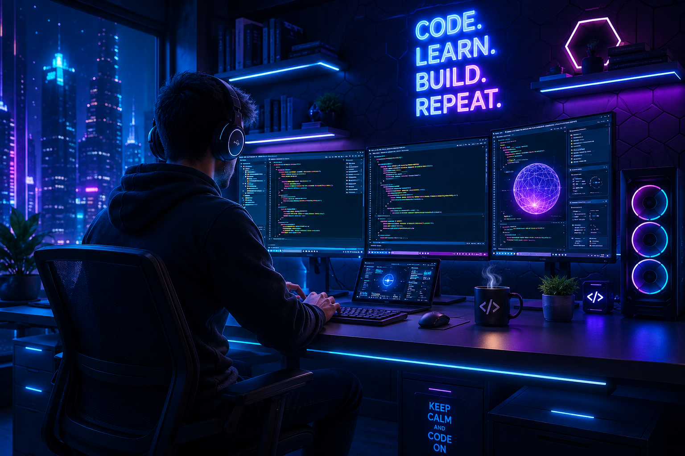

Mastery Curriculum & Roadmap
Welcome to the definitive Olympiad Edge syllabus. Designed specifically to guide absolute beginners from their very first line of code all the way to securing gold medals in international competitive programming arenas and building enterprise-grade software architectures. Follow our structured 11-section roadmap across 10 dedicated learning sites.

Foundations & Programming Basics

Every elite software engineer and international Olympiad champion begins with an unshakeable mastery of fundamental syntax and logical reasoning. In this foundational opening phase, you will dismantle the intimidation barrier surrounding computer science. You will learn how variables store data, how control structures dictate program flow, and how loops and functions create reusable execution blocks. By focusing intensely on problem decomposition, this module trains your brain to translate real-world logical puzzles into executable code with absolute precision.
Through structured interactive modules and guided problem sets, you will build an intuitive understanding of syntax structures in Python and C++. We emphasize deep conceptual clarity rather than rote memorization, ensuring you understand exactly what happens beneath the hood when your CPU processes instructions. This eliminates confusion and sets the stage for advanced algorithmic thinking.
Absolute fluency in basic syntax, variables, conditionals, loops, functions, and elementary debugging.
Elite Workstation Setup & VS Code Mastery

An artisan is only as efficient as their tools. Amateurs waste countless hours wrestling with bloated IDEs, broken compiler paths, and disorganized file structures. In this critical module, you will transform Visual Studio Code into a lightning-fast, highly optimized development cockpit. You will curate essential extensions, configure ergonomic keybindings, establish seamless terminal workflows, and master keyboard-driven navigation that accelerates your coding speed by threefold.
Beyond aesthetics, you will learn how to configure robust debugging environments, linters, and formatters that automatically catch syntax errors and enforce immaculate code style standards. By eliminating friction in your daily workflow, you preserve cognitive energy exclusively for solving complex logical challenges and building sophisticated software products.
Complete mastery over VS Code extensions, custom keybindings, keyboard shortcuts, and zero-latency debugging setups.
Core Web Development & UI Architecture
Software engineering requires the ability to bring ideas to life on the digital canvas. This module bridges pure algorithmic logic with stunning front-end execution. You will master semantic HTML5, modern CSS architectures including Tailwind CSS grid and flexbox layouts, and dynamic DOM manipulation with JavaScript. You will learn how to design responsive, mobile-first user interfaces characterized by glassmorphic panels, immaculate typography, and fluid micro-interactions that captivate users instantly.
We treat web design not merely as decoration, but as a rigorous engineering discipline. You will understand how to structure component trees, optimize asset loading speeds, and adhere to accessibility and usability standards, ensuring your web applications look professional and function flawlessly across all devices.
Proficiency in building responsive web applications using HTML, advanced CSS/Tailwind, and modern interactive JavaScript.
The Coding Community & Peer Synergy
Programming in isolation is a slow and arduous path. True engineering excellence is forged within vibrant communities of passionate peers and mentors. In this section, you will learn how to plug into global developer networks, participate in collaborative hackathons, and engage in constructive code reviews. You will discover how peer accountability accelerates learning, how to ask precise technical questions that elicit expert solutions, and how to share your knowledge to reinforce your own mastery.
We emphasize the cultural norms of open-source ecosystems and competitive programming fraternities. By surrounding yourself with ambitious minds who push the boundaries of technology, you cultivate an unstoppable mindset that keeps you motivated through long-term technical challenges and intense contest preparation.
Ability to network globally, engage in peer code reviews, participate in hackathons, and maintain high personal motivation.
Git & GitHub Collaboration Pipelines

Professional software development is impossible without sophisticated version control. In this module, you will master Git and GitHub, the industry-standard backbone of collaborative engineering. You will move past simple file backups and learn how to manage branching strategies, resolve complex merge conflicts, orchestrate pull requests, and maintain immaculate commit histories that reflect professional engineering discipline.
You will also explore remote hosting workflows, issue tracking, and repository documentation standards (README craftsmanship). Mastering these tools ensures your codebase remains secure, transparent, and ready for team collaboration or open-source contribution at any scale.
Complete proficiency in Git commands, branching, merging, remote repositories, pull requests, and GitHub collaboration.
Competitive Programming & Algorithmic Warfare

This is the beating heart of the Olympiad Edge curriculum. Here, you transition from basic coding into elite algorithmic problem solving. You will dive deep into essential data structures including arrays, hash maps, stacks, queues, trees, and graphs, alongside advanced algorithmic paradigms such as dynamic programming, greedy algorithms, divide-and-conquer, and network flow. You will practice under strict time constraints on platforms like Codeforces and AtCoder.
Our rigorous training regimen teaches you how to analyze time and space complexity with mathematical rigor, optimize brute-force solutions, and anticipate subtle edge cases before writing code. This module prepares you directly for regional and international Olympiad contests where speed and logical precision determine gold medalists.
Mastery over advanced data structures, complex algorithms, Big-O analysis, and high-rating contest performance.
AI Assistance & Next-Gen Developer Workflows

In the era of advanced artificial intelligence, engineers who rely blindly on AI will be replaced, but engineers who master AI as a force multiplier will dominate the industry. In this cutting-edge module, you will learn how to integrate tools like Cursor, Claude, and GitHub Copilot into your daily software architecture pipeline. You will master advanced prompt engineering specifically tailored for code generation, architectural refactoring, and automated test suite creation.
Crucially, you will also develop the critical oversight skills needed to audit AI-generated code for security vulnerabilities, logical edge cases, and performance bottlenecks. This positions you as an elite supervisor who directs artificial intelligence with precision and authority.
Expertise in AI prompt engineering, automated code refactoring, and secure code auditing in modern AI workflows.
Career Possibilities & Global Market Valuations
Technical prowess must translate into real-world career opportunities and financial independence. This module demystifies the global tech job market, exploring lucrative career paths across software architecture, quantitative trading, AI research engineering, and tech entrepreneurship. You will examine current market valuations, salary benchmarks for elite performers, and strategies for positioning yourself as a top-tier candidate to global tech recruiters and venture-backed startups.
Additionally, you will learn how to craft high-impact resumes, optimize your LinkedIn and GitHub presence, and navigate rigorous multi-stage technical interviews with absolute confidence and composure.
Clear career navigation, resume craftsmanship, professional branding, and elite technical interview preparation strategies.
The Double-Helix Future & Synergy
The defining philosophy of Olympiad Edge is the double-helix model—the seamless integration of pure algorithmic problem solving with production-grade software engineering. In this module, you will synthesize everything you have learned. You will understand how lightning-fast contest logic informs resilient backend system design, and how clean front-end architecture provides practical outlets for your mathematical algorithms.
This dual-threat capability separates ordinary coders from legendary engineers. By mastering both domains concurrently, you possess the versatility to solve intractable computational problems while building polished, user-facing applications that scale to millions of users worldwide.
Complete mastery of the double-helix synergy between competitive logic and production software engineering.
Project Showroom & Capstone Directory

Theory and practice culminate in your capstone masterpiece. In this final implementation phase, you will design, build, and deploy an enterprise-grade full-stack web application from scratch. You will integrate secure backend databases, responsive user interfaces, optimized cloud hosting, and robust test suites. Site 10 serves as your official launchpad and project showroom where your creation is documented and presented with aesthetic perfection.
By deploying a live, production-ready application to the cloud, you prove your technical competency to the world, establishing an undeniable portfolio item that validates your journey from absolute beginner to elite software architect.
Successfully deploy and showcase a live full-stack capstone web application on global cloud infrastructure.
International Olympiad Gold & Engineering Legacy
The ultimate pinnacle of the Olympiad Edge roadmap is achieving international competitive glory and cementing an enduring engineering legacy. This final culminating section focuses on peak contest performance psychology, advanced contest tactics, speed optimization under pressure, and representing your nation on the global stage at events like the International Olympiad in Informatics (IOI). You will master contest-day mental fortitude, time management across multi-problem problem sets, and post-contest analytical reviews.
Beyond medals, this section inspires you to give back to the coding community, mentor incoming novices, and architect innovative software systems that solve meaningful real-world problems. Your journey with Olympiad Edge does not end with certification; it marks the beginning of a lifelong career marked by technological mastery and visionary leadership.
Contest peak performance mastery, international medal contention readiness, and lifelong engineering leadership.